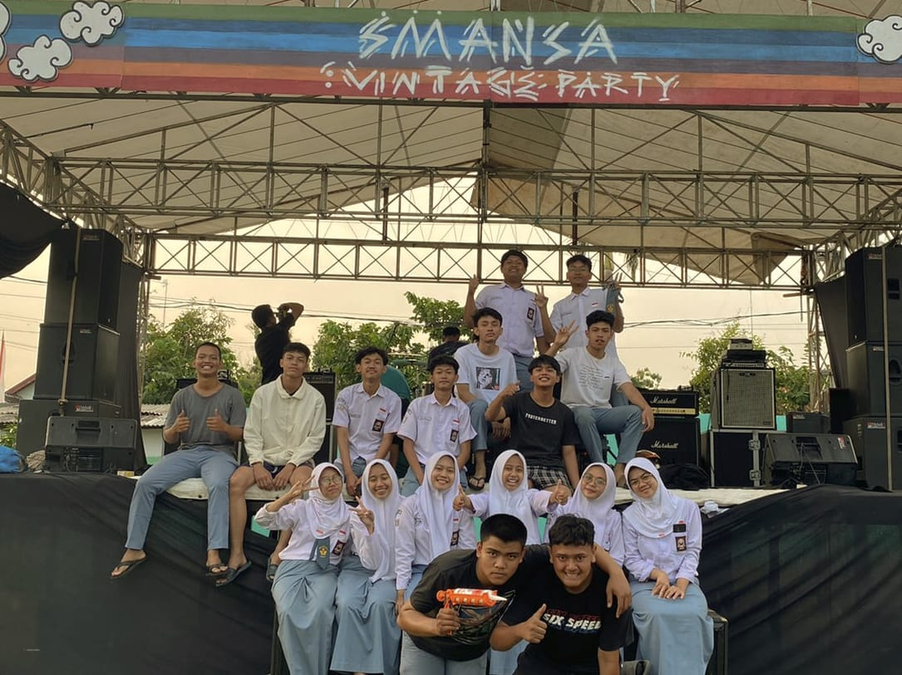
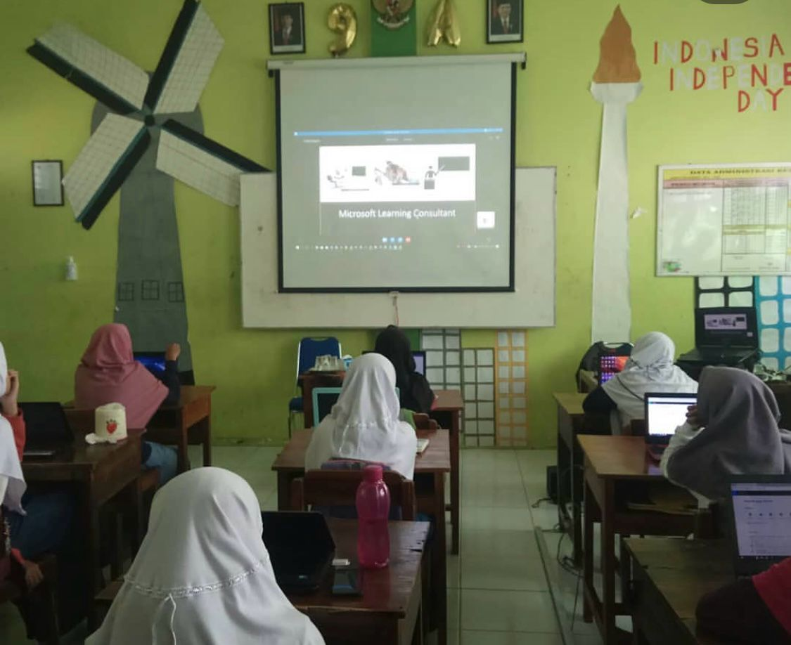
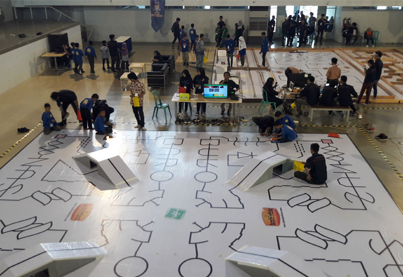

Proyek yang Pernah Saya Kerjakan

Saya pernah berkontribusi dalam mendesain proyek hutan sekolah melalui kerja sama tim yang solid. Selain itu, saya aktif dalam berbagai organisasi dan memiliki minat besar dalam mengeksplorasi seni, yang terus mendorong saya untuk berkembang dan menciptakan karya yang bermakna.

Saat SMP, saya juga aktif mengikuti kelas virtual bersama Microsoft Learning serta turut serta dalam acara Skype-a-Thon Indonesia yang disiarkan langsung dari Singapura pada tahun 2018. Saat ini, saya ingin terus menambah pengalaman di bidang desain, teknologi, dan kreativitas untuk mengasah keterampilan serta memperluas wawasan saya.

Saya pernah bergabung dalam ekstrakurikuler robotika karena ketertarikan saya yang besar pada teknologi dan inovasi. Dalam kegiatan ini, saya belajar tentang dasar-dasar pemrograman, perakitan komponen elektronik, serta bagaimana menciptakan solusi kreatif melalui teknologi. Mengikuti ekstrakurikuler ini juga mengasah kemampuan saya dalam bekerja sama dalam tim, berpikir kritis, dan memecahkan masalah secara efektif. Pengalaman ini semakin memperkuat minat saya dalam bidang teknologi serta mendorong saya untuk terus mengeksplorasi dan mengembangkan keterampilan di dunia digital dan inovasi.